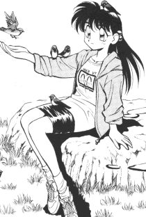

Misc FanFics: D-J
|
This section is dedicate to other works that are losely considered fan fics.
This page holds poems, spam fics, short fics, song fics, and many other tangental
works. Please go here if you would like your works
published. |
New * A-C
* D-J * K-R * S-Z
* MSTs |
D
Rameela "Ryoko_RD" Dalaten
(ryoko_rd@hotmail.com)
-
No Need For a Daughter
This is a story concerning the daughter of Ryoko and Tenchi all going
back to Yokayama, Japan. 4KB -12/23/2000
Damien
(damien_searight@email.msn.com)
Dark Jezter
(dark_jezter@hotmail.com)
Dark Ryoko-2
(darkryoko2@yahoo.com)
-
The Abyss
Author's first fanfic. 4KB -6/21/2000
-
No Need For Soap Opera
A series of funny and wacky soap fics with a little help from another
cartoons. 2KB -6/21/2000
Dead Akane
(jmft@rocketmail.com)
Death (dandude87@yahoo.com)
Carmen "Blue-Haired Goddess" de la Cruz
(bluehairedgoddess@tenchiclub.com)
-
Smiled at Her
A conversation between Ryoko and Tenchi. A WAFF poem fic. Author's
first ever. 3KB -1/14/2002
Demigodess Ryoko
(d3migodd3ssryoko@yahoo.com)
Kenneth LeRoy Dicke
(kennethdicke@hotmail.com)
-
Tenchi/Tommy Rock Opera
This is a songfic which takes the rock opera Tommy, by The Who, and
transmogrifies it into a whole new story about Tenchi. 23KB -9/17/2000
Thomas "009" Doscher
(doscher009@hotmail.com)
Dot Warner
(dot_warner17@my-dejanews.com)
E
Nicholas Eckert
(nicholec@nstate.nscc.cc.oh.us)
Empress Galaxia
(fluffywoodchuckqueen@hotmail.com)
-
The Best Kind of Friends
For anyone who has ever wondered why Ryoko was miraculously alive
at the end of Tenchi Universe. 6KB -5/28/2001
The Entry Plug
(lateralus_metatron@hotmail.com)
Eralc2000 (ERALC2000@aol.com)
Vincent M. "Max Raven" Eskilsson
(_8thlegion_max@mail.bip.net)
Vincent M. "Max Raven" Eskilsson
(_8thlegion_max@mail.bip.net)
and Henrik Persson
(egrim@hotmail.com)
Don Euclid (Euclid@nwrain.com)
Jenna Evans
(Spacegirlmimi@aol.com)
The Evergreen Cortex
(the_evergreen_cortex@yahoo.com)
Evil Asian Genius
(cori_ohki@hotmail.com)
F
The Fallen Gamekeeper
(Gamekeeper@shawhan.net)
Jon Farber (Sabreb@erols.com)
Mike Fenton
(mpfenton@hotmail.com)
Mark Ferrer (mabli@idirect.com)
-
"A Stupid Idea"
Tenchi used a intresting method in order to chose one of the girls.
4KB -10/3/1998
-
Mother's Advice
Tenchi talks to his mommy. 4KB 10/17/1998
-
What'll it be?
A small joke that can be expanded. 6KB -12/12/1998
Chris "GumGirl" Fields
(jacfield@rcn.com)
Firebird
(firebird1919@attbi.com)
-
Autumn Leaves
A 'what if' fic concerning the fate of Ryoko between Universe episodes
24 and 26. 6KB -12/19/2000
-
Adagio
Ayeka introspective. 5KB -11/27/2000
Foxanime (Foxanime@aol.com)
J.D. Freeman
(j_delight@hotmail.com)
-
Ancient Muyo!
What if Tenchi never chose a girl and the gang aged like normal humans?
4KB -2/26/2001
G
Geno Calamari
(genox27@hotmail.com)
-
Eyes
A story about the first moments of awareness. 6KB -9/21/2001
The Ghost of 'lectricity
(lectricity@email.si)
Dade "Argus Cromwell" Gifford
(cubone41@yahoo.com)
-
Songfic-Masaki number 5
A parody of Mambo number 5. 3KB -12/23/2000
-
OAV 4 Out Takes
Outtakes from Tenchi Muyo episode 4 "Mihoshi Falls to the Land of
Stars" 7KB -11/27/2000
-
What If?
A backwards story in which Tenchi loves the women, but they don't
love him. 14KB -3/5/2001
Max Gilliland (Ryoko39655@aol.com)
and Rhys Doyle (Blugoon@aol.com)
Graffito Tag
(graffitotag@hotmail.com)
-
Perversions of Tenchi
A bizzare fanfic experiment. Can normal situations become lemons by
simple manipulation? 6KB -5/6/2002
H
Happosai
(happosai@subdimension.com)
Thrythlind Hardwulf
(thrythlind@yahoo.com)
Jeffery Harris
(JLHOnami@mchsi.com)
James Harrisson
(anime_fan_93433@yahoo.com)
and George Gurchinoff
(gsslll@hotmail.com)
-
No Need for a Plot
It is a wonderful journy through a world nonsenseical gibbrish. 11KB
-2/26/2001
Matthew Harrison
(musko_no_kaji@hotmail.com)
HaZaRDx
(trancechild85@aol.com)
Samantha Heartless
(wicked_lady@godmail.com)
Ryan Hill
(umhillrr@cc.UManitoba.CA)
Thomas Holmes
(Pokemario@aol.com)
Jennifer "Boo" Holochwost
(BooHolochwost@msn.com)
Steve 'n' Hotaru
(sfe_otaku@hotmail.com)
Kevin "Crusader" Hughes
(crusader_esper@hotmail.com)
-
The Tenchi Muyo Interview
The Tenchi Muyo cast gathers together to be interviewed and asked
questions by fans of the show. 23KB -9/15/1999
John "Crowbar" Hurst
(MakoReno@aol.com)
I
The Ice Falcon
Illjwamh (illjwamh@yahoo.com)
-
A Psycho ALRHI's Rant
A parody of your run-of-the-mill Ryoko gets Tenchi fic with a twist:
Aeka gets Tenchi. 10KB -12/21/2001
Ismaphael the Fallen
Archangel (ismaphel@hotmail.com)
J
Jaf (JuggaloJaf@aol.com)
Jaiq da Goose
(GOOSE20693@aol.com)
Jake the Goose
(wildeyak2069@hotmail.com)
Jayman (JAAAg18@aol.com)
-
MST D-12
Another batch of unlucky souls to join the ever growing list of MSTers.
(Mulltipart) -5/4/2002
Jenny The Demon
(DemonJen@aol.com)
The Jetset
(jetset@ntlworld.com)
-
"How I felt" a.k.a. "Calling All Disillusioned
Fan Fic Authors!"
A personal fic where 'alternate visions' of our two favourite GPs
persue their errant Author who had gone off the rails. 6KB -7/24/2001
-
"Ayeka"
A parody of Shaggy's 'Angel' about our favourite purple-headed monarch.
3KB -8/10/2001
-
"Mordern Theory"
A song fic set in Part 4 of Tenchi O-Rusuta©:Kazekera. 2KB
-1/30/2002
-
"Tenchi Masaki"
A parody of much overlooked Eminem song "Mashall Mathers." 7KB
-8/10/2001
-
"Ride Wit Tenchi"
A parody rapfic of Nelly's "Ride Wit Me" 7KB -8/10/2001
-
"The Shoop Shoop Anime Song"
A parody of the Shoop Shoop song about how to tell who's an Anime
character. 2KB -8/10/2001
-
"Police Magic English Version"
A version of the song "Police Magic" which makes more sense than a
direct translation. 4KB -8/10/2001
-
"Tenchi O-Rusuta©: Perfect
Moment"
Every Tenchi series has to have a catchy and sweet theme tune, and
this is O-Rusuta©'s. 4KB -9/13/2002
-
"Watch out - This Could Actually
Happen!"
It appears Tenchi, and everyone else, have just waited far too long
to declare their love. 9KB -9/13/2002
-
"The Expo"
An Anime-centered parody of Blink 182's masterpiece of 90s pop-punk.
3KB -9/13/2002
-
AntiMotivation - How Not To Write A Tenchi Fan
Fic
Diabolo shares his knowledge of fan fic writing with an uninterested
world. 4KB -8/10/2001
-
Washu Caught Me!
A songfic parody of Shaggy's 'It Wasn't Me!' 4KB -9/19/2001
-
I'm Sorry Nurse Washu
Washu has finally captured Kagato, and she and Ryoko intend to get
their revenge in this semi-dark song fic. 6KB -5/28/2002
-
Stonami!
When Yosho's 'special feild' is burned down, the Masaki house becomes
mysteriously chilled, and only a hormonally imbalanced Ryoko can save the
day. 20KB -5/28/2002
-
The Tenchi Tango
A Tango-style song for the Tenchi characters to sing. 4KB
-9/19/2001
-
Why did I get up this morning?
A song fic which shows how Tenchi probably feels when he awakens.
3KB -9/19/2001
-
Winter's Day
A parody of Saturday (Oooh! Oooh!) by Ludacris, another chapter of
the Sagat vs. Diabolo songfics. It's not quite as bad as it sounds. 5KB
-5/13/2002
-
My, My, My, Ayeka
Another parody song fics concerning the magnificent magenta princess.
2KB -9/19/2001
-
I'm a Jurian
Description: In this parody of 'Survivor' Tenchi has chosen Ryoko-
what is Ayeka to do? 4KB -9/19/2001
-
"Washu Caught Me (red handed)"
A songfic parody of shaggy's "It's wasn't me." 4KB -9/17/2001
-
A Case For Sakuya
Diabolo reacts to the anti-Sakuya hatred which he finds around the
net. 14KB -9/25/2001
-
Diabolo - Agent of KOME!
Fighting evil is all in a day's work for a Mihoshi-lover. 5KB
-10/8/2001
-
"Purple Hair"
A parody D12 and Eminem's Purple Hills about Misaki and Funaho. 6KB
-10/8/2001
-
"Who Let The Demon Out?"
Finally a Ryoko song! A parody of Baha Men's "Who Let The Dogs Out?"
4KB -10/8/2001
-
"What Would Pop Culture Do For
Tenchi?"
Tenchi gets the modern american treatment from the Demented Diabolo.
6KB -10/8/2001
-
"Mihoshi and Kiyone"
Will Smith's "Miami" gets the Tenchi treament. 4KB -10/8/2001
-
The Tenchi Horror Show
The script for the Diabolo's parody of Richard O' Brians Rock n' Roll
Musical. 40KB -12/23/2001
-
"The Tenchi Horror Show Lyrics"
All 19 song numbers for Diabolo's parody of Richard O' Brians Rock
n' Roll Musical. 26KB -12/29/2001
-
"The Tenchi OAV\T.V. Seriese Drinking
Game!"
Spot the events and get completely drunk. 7KB -1/8/2002
-
"Tenchi O-Rusuta©: An Explanation"
The Tenchi O-Rusuta© Universe guide for other fics by The Jetset.
17KB -1/8/2002
-
"Call The Small Thing"
A completely pathetic parody of 'All The Small Things" by Blink 182.
2KB -2/25/2002
-
"Lament For Achika"
A poem, about the tragic romance which ended so quickly before Tenchi
began. 2KB -2/25/2002
-
"Lament For Nobuyuki"
Another poem, this time for Tenchi's father from his spirit lover.
2KB -2/25/2002
JL (tenchii@hotmail.com)
-
"A New Idea..."
Psyche shows you what the Author has instore. 5KB -10/16/1999
Joe (Holmesdri@aol.com)
-
A Moment Alone
A short story of Ayeka relaxing on Earth. 3KB -3/11/2002
Ben Jonas
(insaneben@yahoo.com)
Huw Jones
(ryokos.acolyte@btinternet.com)
Jurgan (jurgan4@home.com)
-
Taking You Home
Ryoko reminisces about her life and her time with Tenchi in this songfic
based on the Don Henley hit of the same name. 5KB -9/18/2001
Jusenkyo Guide
(Jusenkyoguide@hotmail.com)
-
"Mindy"
Tenchi and Animaniacs Spam Fic. 3KB
Jwhitman (jwhitman@grnco.net)